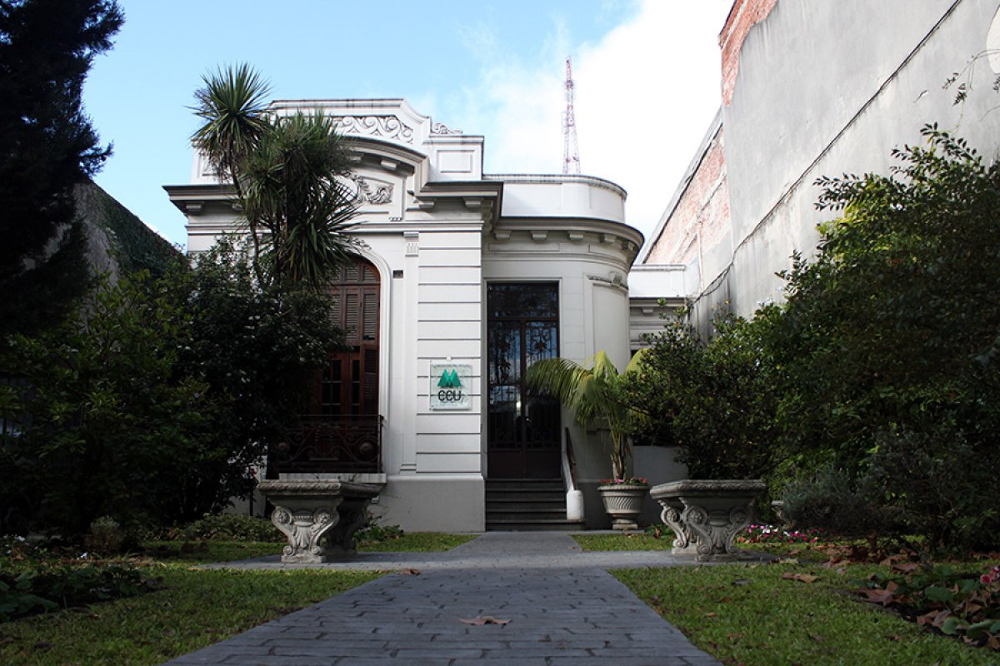
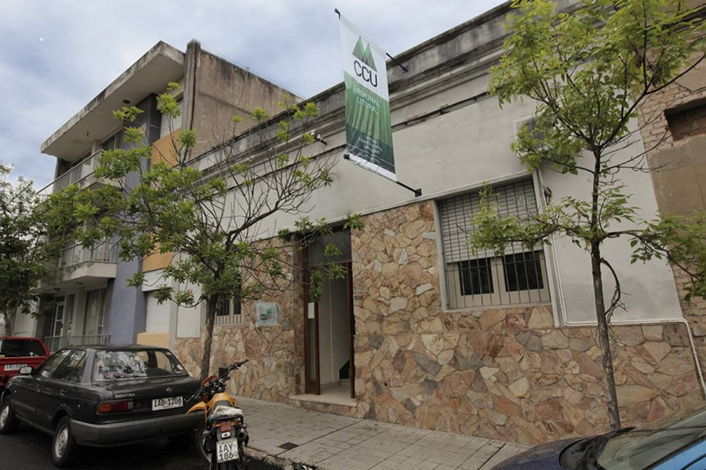

Contacto
Escribinos o acercate a cualquiera de nuestras dos sedes.

Casa Central — Montevideo
Eduardo Víctor Haedo 2252, Montevideo
- Tel: (+598) 2401 2541
- Correo: ccu@ccu.org.uy

Formulario de contacto
Todos los campos son obligatorios. Te responderemos a la brevedad.
Enlaces de interés
Federaciones, organismos públicos y redes del cooperativismo.
Ver todos los enlaces